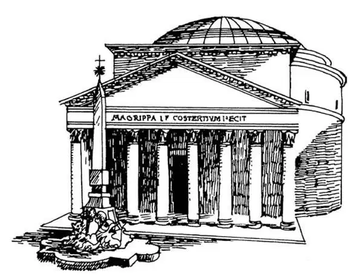

35
An Emperor Who Was Made a God
被看做神明的皇帝

A person is famous who has a town or a street named after him or her.
Will you ever do anything great enough to have even an alley named after you?
Just suppose a month, one of the twelve months of the year, was given your name!
Millions upon millions of people would then write and speak your name forever!
I'm going to tell you about a man who not only had a month named after him but who was made a god!
After Caesar had been killed, three men ruled the Roman Empire. One of these three men was Antony, the friend of Caesar, who made the famous speech over his dead body. The second was Caesar's adopted son, who was named Octavius. The name of the third you don't need to know, for Antony and Octavius soon got rid of him. Then no sooner had they forced him out than each of these two began to plot to get the share of the other.
Antony's share, over which he ruled, was the eastern part of the empire. The capital of this part was Alexandria in Egypt, hence Antony went there to live.
In Egypt Antony fell in love with Cleopatra, as Caesar before him had done, and he finally married her.
Octavius, in the west, which was his share, then made war on Antony and Cleopatra together, and in the end beat them both. Antony felt so bad at being beaten by Octavius that he committed suicide.
His widow, Cleopatra, thereupon, flirted with Octavius as she had with Julius Caesar and Antony, hoping to make him also fall in love with her and so win him in that way.
It was no use. Octavius was a different kind of man from both Julius Caesar and Antony. He was cold-blooded and businesslike. He had no heart for love-making. He would not let a woman charm him or turn him aside from his plan, which was to be the greatest man in the world!
Cleopatra saw that it was no use trying to fool him. Then she heard that she was going to be taken back to Rome and paraded through the streets, as was done with any other prisoners taken in battle. She could not stand such a shame as that, and so she made up her mind she would not be taken back to Rome.
Now, in Egypt there is a kind of snake called an asp, which is deadly poisonous. Taking one of these asps in her hand, she uncovered her breast and let it bite her, and so she died.
Octavius was now ruler over all the countries that belonged to Rome, and when he returned home to that city, the people hailed him Emperor . He then gave up the name Octavius and had himself called Augustus Caesar, which is like saying,His Majesty, Caesar. This was in 27 B.C. The Romans had got rid of their kings in 509. From now on Rome had emperors, who were more than kings, for they ruled over many countries.
Octavius, now with his name changed to Augustus Caesar, was only thirty- six years old when he became sole master of the Roman world. Rome was the great capital of this vast empire.
Augustus set to work to make Rome a beautiful city. He tore down a great many of the old buildings made of brick and put up in their place a remarkable number of new and handsome buildings of marble. Augustus always bragged that he found Rome brick and left it marble.
One of the finest buildings in Rome, the Pantheon was built. Pantheon means the temple of all the gods. Do not mix this with the Parthenon in Athens, for the two buildings are quite different, and though the names look something alike and sound something alike, they mean quite different things. Parthenon is from the goddess Athena Parthenos; Pantheon is from the two words Pan theon , which means all gods.

Roman Pantheon（罗马万神庙）
The Pantheon has a great dome made of brick and mortar. This dome is shaped like a bowl turned upside down, and in the very center of the top of the dome is a round opening called an eye. This open eye is the only “window” in the building, but through it, even on a cloudy day, enough light comes so that you can clearly see the whole handsome interior.
So magnificent did the city become with all these wonderful buildings, and so permanently did it seem to be built, that it was known as The Eternal City and is still so spoken of.
There was a public square in Rome called the Forum. Here markets were held and the people came together for all sorts of things. Around the Forum were erected temples to the gods, court-houses, and other public buildings. The court-houses were something like the temples that the Greeks built, only the columns were put on the inside of the building instead of on the outside.
Triumphal arches also were erected to celebrate great victories. When a conquering hero returned from the war, he and his army passed through such an arch in a triumphal parade.
There had been in Rome a great amphitheater that is supposed to have held more people than any structure that has ever been built—two hundred thousand, it is said, or more than all the people who live in some good-sized cities. This was called the Circus Maximus. It was at last torn down to make room for other buildings.
Another amphitheater was the Colosseum, but this was not built until some time after Augustus had died. It held about the same number as the largest stadium in this country does today. Here were held those fights between men, called gladiators, and wild animals that I have already told you about. It is still standing, and, though it is in ruins, you can sit in the same seats where the old Roman emperors did, see the dens where the wild animals were kept, the doors where they were let into the arena, and even bloody marks that are said to be the stains made by the slain men and beasts.
So many famous writers lived at the time of Augustus that this has been called the Augustan Age. Two of the best known Latin poets lived at this time. These poets were Virgil and Horace. Virgil wrote the Æneid, which told of the wanderings of Æneas, the Trojan, who settled in Italy, and was the great-great-great-grandfather of Romulus and Remus. Horace wrote many short poems called odes. They were long songs of shepherds and shepherdesses and songs of the farm and country life. People liked his songs, and many still name their sons after him.
When Augustus Caesar died, he was made a god because he had done so much for Rome; temples were built in which he was worshiped, and the month of August was named after him.
【中文阅读】
如果一个城市或街道是以一个人的名字命名的，那么这个人一定很出名。
你将来会不会做点了不起的大事，甚至能让一条小街以你的名字命名呢？
设想一下，假如一年中的某个月份是以你的名字命名的！
那么，千千万万的人从此以后就会经常写下和说出你的名字了！
我要给你讲的这个人，人们不但以他的名字命名一个月份，而且还把他奉为神灵呢！
恺撒被杀之后，三个人在统治罗马帝国。这三人中的一个就是恺撒的朋友安东尼，正是他在恺撒的遗体旁发表了那篇著名的演说。另一个是恺撒的义子，名叫屋大维。还有一个人的名字你就不必知道了，因为安东尼和屋大维很快就把他除掉了。但是，这个人刚刚被除掉，另外两个就开始钩心斗角，想要谋取对方的领地。
安东尼统治的那部分是帝国的东部。这部分的都城是埃及的亚历山大城，所以他就去那里居住。
在埃及，安东尼像之前的恺撒一样，也爱上了克娄巴特拉，最后娶了她。
帝国西部属于屋大维，但屋大维并不甘心只在西部，他向安东尼和克娄巴特拉发起战争，并最终打败了他们。安东尼被屋大维打败后非常难过，受不了就自杀了。
他的遗孀克娄巴特拉随即向屋大维调情，一如她过去向恺撒和安东尼调情一样，希望自己的魅力也让屋大维爱上自己，从而赢得他的信任。
这样做没有用。屋大维与恺撒和安东尼不是同一类的人。他冷酷无情，讲求实际。他对谈情说爱不感兴趣，他可不会被一个女人迷住，或者不会因为女人放弃自己雄心勃勃的计划，他的目的是要成为世界上最伟大的人！
克娄巴特拉看出用美色诱惑屋大维丝毫没用。然后，她还听说她要被带回罗马，要被游行示众，凡是从战场上带回的俘虏都要受到这样的处置。她无法忍受这样的羞辱，因此，她决意不能被带回罗马。
埃及有一种毒蛇叫“角蝰”，其毒性剧烈，足以致命。她解开胸前的衣服，手拿一条角蝰，让它咬了一口，她就这样死了。
屋大维现在是罗马所有属地的统治者，当他回到罗马的时候，罗马人民欢呼拥立他为“皇帝”。他随后放弃了“屋大维”这个名字，让别人称自己“奥古斯都•恺撒”，就像通常尊称的“恺撒陛下”。这是在公元前27年。罗马在公元前509年废除了国王，从现在开始，罗马有了皇帝，皇帝比国王的权利更大，因为皇帝统治着很多国家。
改名为奥古斯都•恺撒的屋大维在成为罗马帝国唯一的元首的时候，只有36岁。罗马是这个庞大帝国的都城，其地位现在更是非同寻常。
奥古斯都开始集中心思，要将罗马变成一座美丽的城市。他拆掉了很多用砖造的旧建筑，在原地用大理石建起大量堂皇的新建筑。奥古斯都总是夸口说他得到的 罗马是砖做的，而留下了的罗马却是大理石造的。
罗马最精美的建筑之一万神庙建成了。“万神庙”的意思就是所有神灵的庙宇。不要把万神庙和雅典的帕台农神庙混淆了，因为这两座建筑物差别很大，虽然它们的英语名字拼写和读音都有点像，但却分别表示不同的意思。帕台农神庙得名于女神雅典娜•帕台农；“万神庙”(Panthoen ）是由两个希腊语单词Pan （所有的）和 theon （神）组成，意思就是“所有的神”。
万神庙有个用砖和砂浆砌成的巨大的圆屋顶。这个圆屋顶的形状像一只倒扣的碗，穹顶的正中有个圆孔，叫做“眼睛”。这只睁开的“眼睛”是这座建筑唯一的“窗户”，但是，即使是在阴天，也有足够的光线透过它射进来，让你清楚地看到整个神殿富丽堂皇的内部。
有了这些辉煌的建筑，罗马城变得宏伟壮观，似乎建成后会永世长存，以至于被称作“不朽城”，现在还有人这么称呼罗马。
罗马有个公共广场，叫做“公共集会场所”。这里有很多集市，人们都来这儿买各种各样的东西。广场四周建起了神庙、法庭和其他公共建筑物。罗马法庭建得有点像希腊人的庙宇，只不过圆柱是建在建筑物的里面，而不是外面。
为了庆祝重大胜利，一些凯旋门也建起来了。当远征的英雄从战场凯旋的时候，他和他的军队就会以庆祝胜利的游行队伍的方式穿过这样一座拱门。
罗马曾有一座巨大的露天圆形竞技场，据推测，它容纳的人数比迄今为止所建的任何一座建筑物都多——能容纳二十万人，据说比某些大城市的居民人数都多。它叫“大竞技场”。最后，为了给其他建筑物腾出地方，把它拆掉了。
另一座露天圆形竞技场就是“大斗兽场”，但它是在奥古斯都死后一段时间才建造的。它容纳的人数和这个国家现在最大的体育场一样多。这儿举行过那些角斗士之间和角斗士与兽之间的格斗，关于这种格斗我已经介绍过了。这个斗兽场现在还在那里，虽然它已经破败不堪，但是你还能坐在古罗马皇帝曾经坐过的位子上，看到那些关押野兽的洞穴，野兽被放入斗兽场经过的门，甚至还能看到一些血的斑点，据说是被杀死的人和野兽留下的血迹。
奥古斯都在位的时候，出现了很多著名的作家，所以这个时期被称作“奥古斯都时代”。最著名的两个拉丁诗人就生活在这个时代。这两位诗人就是维吉尔和贺拉斯。维吉尔写了《埃涅阿斯记》，讲述的是特洛伊人埃涅阿斯在特洛伊陷落以后的流浪故事。埃涅阿斯最后在罗马定居下来，他就是罗马城的开创者罗慕洛和瑞摩斯的曾、曾、曾祖父。贺拉斯写了很多叫做“颂歌”的短诗。这些诗歌颂了牧羊人和牧羊女的爱情和田园乡村生活。人们喜欢他的诗歌，即使现在许多人还给他们的儿子取名为贺拉斯。
在奥古斯都死后，他被奉为神明，因为他为罗马作出了巨大的贡献。人们为他建造了庙宇，把他作为神来崇拜，并且以他的名字命名八月这个月份。